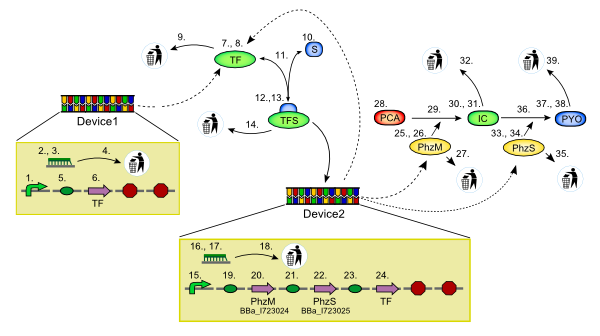
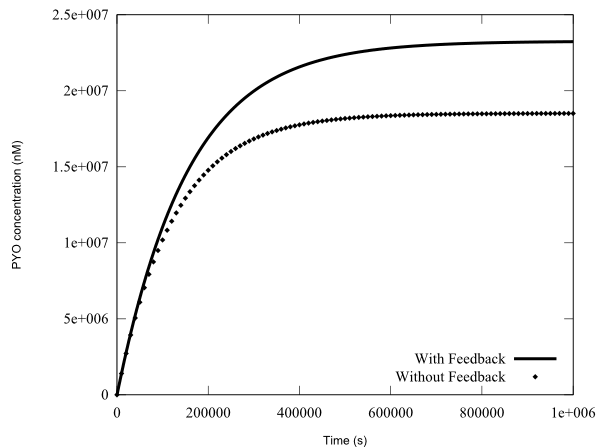

This is a Systems Model for the gold medal-winning machine 'ElectrEcoBlu' produced by the team from Glagow University for the iGEM 2007 competition. Details about the project can be found here.

Device 1 produces TF via a constitutive promoter, which combines with S to form a transcription factor for Device 2 (TFS). TFS produces PhzM and PhzS, intermediates to producing PYO which is the reducing agent of interest in this model.
There are two versions of this model, the first has a positive feedback loop from Device 2, shown as a CDS for TF downstream of Device 2's promoter. Thus Device 2 produces more TF which feedsback on the Device's promoter. The second version does not have the RBS and CDS for TF in Device 2.
The Figure below shows the PYO time-courses for the models, one without the TF feedback, and one with.

The entire model archive can be downloaded, or a ZIP file encapsulating all the files can been obtained from here.
The numbers on the Figure above relate to imported components. A map of the imported component architecture is as follows:
ElectrEcoBluModel.ElectrEcoBluModel_SVBM[
ElectrEcoBluModel.eColiCell(Chassis_EColi(Template_Chassis_WellStirredBag))
ElectrEcoBluModel.Time(Time)
ElectrEcoBluModel.SpeciesInitialConcentrations
1. ElectrEcoBluModel.ElectrEcoBluDevice1_Promoter(ElectrEcoBluDevice1_Promoter(Template_Promoter_Constitutive))
2. ElectrEcoBluModel.RNA_Device1(Template_Species)
3. ElectrEcoBluModel.RNA_Device1_interface
4. ElectrEcoBluModel.Bioenvironment_Degradation_Device1RNA(Bioenvironment_Degradation_ElectrEcoBluDevice1RNA(Template_RxR1P1))
5. ElectrEcoBluModel.ElectrEcoBluDevice1_RBS_TF(ElectrEcoBluDevice1_RBS_TF(Template_RBS))
6. ElectrEcoBluModel.ElectrEcoBluDevice1_ProteinCDS_TF(ElectrEcoBluDevice1_ProteinCDS_TF(Template_ProteinCDS))
7. ElectrEcoBluModel.TF(Template_Species)
8. ElectrEcoBluModel.TF_interface
9. ElectrEcoBluModel.Bioenvironment_Degradation_TF(Bioenvironment_Degradation_TF(Template_RxR1P1))
10.ElectrEcoBluModel.S
11.ElectrEcoBluModel.RxR2P1_TFSformation(Bioenvironment_RxR2P1_TFSFormation(Template_RxR2P1Rev)
12.ElectrEcoBluModel.TFS(Template_Species)
13.ElectrEcoBluModel.TFS_interface
14.ElectrEcoBluModel.Bioenvironment_Degradation_TFS(Bioenvironment_Degradation_TFS(Template_RxR1P1))
15.ElectrEcoBluModel.ElectrEcoBluDevice2_Promoter(ElectrEcoBluDevice2_Promoter(Template_Promoter_Inductive))
16.ElectrEcoBluModel.RNA_Device2(Template_Species)
17.ElectrEcoBluModel.RNA_Device2_interface
18.ElectrEcoBluModel.Bioenvironment_Degradation_Device2RNA(Bioenvironment_Degradation_ElectrEcoBluDevice2RNA(Template_RxR1P1))
19.ElectrEcoBluModel.ElectrEcoBluDevice2_RBS_PhzM(ElectrEcoBluDevice2_RBS_PhzM(Template_RBS))
20.ElectrEcoBluModel.ElectrEcoBluDevice2_ProteinCDS_PhzM(ElectrEcoBluDevice2_ProteinCDS_PhzM(Template_ProteinCDS))
21.ElectrEcoBluModel.ElectrEcoBluDevice2_RBS_PhzS(ElectrEcoBluDevice2_RBS_PhzS(Template_RBS))
22.ElectrEcoBluModel.ElectrEcoBluDevice2_ProteinCDS_PhzS(ElectrEcoBluDevice2_ProteinCDS_PhzS(Template_ProteinCDS))
23.ElectrEcoBluModel.ElectrEcoBluDevice2_RBS_TF(ElectrEcoBluDevice2_RBS_TF(Template_RBS))
24.ElectrEcoBluModel.ElectrEcoBluDevice2_ProteinCDS_TF(ElectrEcoBluDevice2_ProteinCDS_TF(Template_ProteinCDS))
25.ElectrEcoBluModel.PhzM(Template_Species)
26.ElectrEcoBluModel.PhzM_interface
27.ElectrEcoBluModel.Bioenvironment_Degradation_PhzM(Bioenvironment_Degradation_PhzM(Template_RxR1P1))
28.ElectrEcoBluModel.PCA
29.ElectrEcoBluModel.RxR1P1MM_ICformation(Bioenvironment_RxR1P1MM_ICFormation(Template_RxR1P1MM))
30.ElectrEcoBluModel.IC(Template_Species)
31.ElectrEcoBluModel.IC_interface
32.ElectrEcoBluModel.Bioenvironment_Degradation_IC(Bioenvironment_Degradation_IC(Template_RxR1P1))
33.ElectrEcoBluModel.PhzS(Template_Species)
34.ElectrEcoBluModel.PhzS_interface
35.ElectrEcoBluModel.Bioenvironment_Degradation_PhzS(Bioenvironment_Degradation_PhzS(Template_RxR1P1))
36.ElectrEcoBluModel.RxR1P1MM_PYOformation(Bioenvironment_RxR1P1MM_PYOFormation(Template_RxR1P1MM))
37.ElectrEcoBluModel.PYO(Template_Species)
38.ElectrEcoBluModel.PYO_interface
39.ElectrEcoBluModel.Bioenvironment_Degradation_PYO(Bioenvironment_Degradation_PYO(Template_RxR1P1))
]
where the following code is used:
M[A] Model M contains A
A(B) A imports a component that is referred to as B
F.S Component or model is named S, held in file named F
D Component is named D, held in file name D (i.e. shorthand for D.D)
Two of the Parts used in this model have their DNA stored in the Repository of Standard Biological Parts. They are as follows:
The CDS for PhzM (number 20. above): Part BBa_I723024.
The CDS for PhzS (number 22. above): Part BBa_I723025.